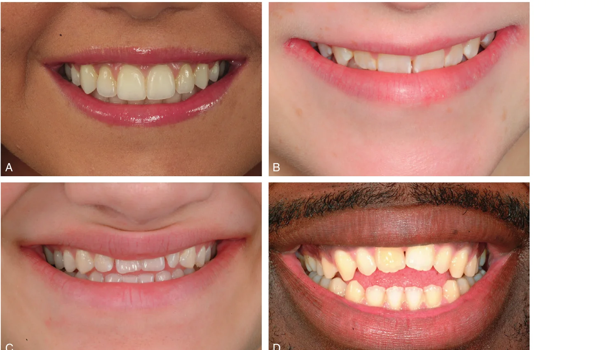

نسخه استخراجشده؛ ترجمه یا تأیید علمی انجام نشده است. وضعیت: captured
لبخند را در سه پارامتر بسنج:
⚠️ لبخند خودجوش را ارزیابی کن، نه لبخند دستوری — تفاوتشان زیاد است و لبخند دستوری اغلب کشیدهتر و غیرواقعی است.
روش عملی: هنگام صحبت کردن با بیمار دربارهی موضوعی خوشایند، چند عکس بگیر یا ویدئوی کوتاه ضبط کن. آنچه در آن لحظه میبینی، همان چیزی است که در زندگی روزمرهاش دیده میشود.
و یک مرجع مفید: در حالت استراحت، نمایش حدود ۲ تا ۴ میلیمتر از انسیزور مرکزی بالا در جوانان طبیعی است و با افزایش سن کم میشود.

منحنی لبههای انسیزال دندانهای بالا باید با انحنای لب پایین هنگام لبخند هماهنگ باشد.
| وضعیت | توصیف |
|---|---|
| همخوان | موازی با انحنای لب پایین — مطلوب |
| صاف | بدون انحنا — ظاهر مسنتر |
| معکوس | انحنای مخالف — نامطلوبترین حالت |
💡 خطر پنهان: اینتروژن بیش از حد قدامیهای بالا یا نصب براکتهای نامناسب میتواند قوس لبخند را صاف کند.
این یکی از معدود مواردی است که مکانیک درمان میتواند نتیجهی زیبایی را بدتر از وضعیت اولیه کند — و بیمار هم متوجه میشود، حتی اگر نتواند نامش را بگذارد.
پیشگیری ساده است: پیش از باندینگ، ارتفاع براکتهای قدامی را با در نظر گرفتن قوس لبخند هدف تعیین کن، نه فقط بر پایهی مرکز تاج.
همین منطق در دیپبایت هم برقرار است: اگر نمایش انسیزال مناسب یا کم است، بهجای اینتروژن انسیزورهای بالا، منحنی اسپی را با اکستروژن پرمولرها (در بیمار در حال رشد) یا اینتروژن انسیزورهای پایین تسطیح کن. اینتروژن انسیزورهای بالا را برای بیماری نگه دار که نمایش انسیزال زیادی دارد.
اما عدد بهتنهایی کافی نیست — باید علت را یافت، چون درمان هرکدام کاملاً متفاوت است:
| علت | درمان محتمل |
|---|---|
| رویش غیرفعال ناقص | جراحی افزایش طول تاج |
| لب بالای کوتاه یا پرتحرک | درمانهای لبی |
| رشد عمودی زیاد ماگزیلا | اینتروژن با مینیاسکرو یا جراحی |
روش تفکیک عملی: طول تاج بالینی انسیزور مرکزی را بسنج. اگر کوتاهتر از حدود ۹ تا ۱۰ میلیمتر است، رویش غیرفعال ناقص محتمل است. اگر طول تاج طبیعی است و نمایش استراحت هم زیاد، مسئله عمودی و اسکلتی است.